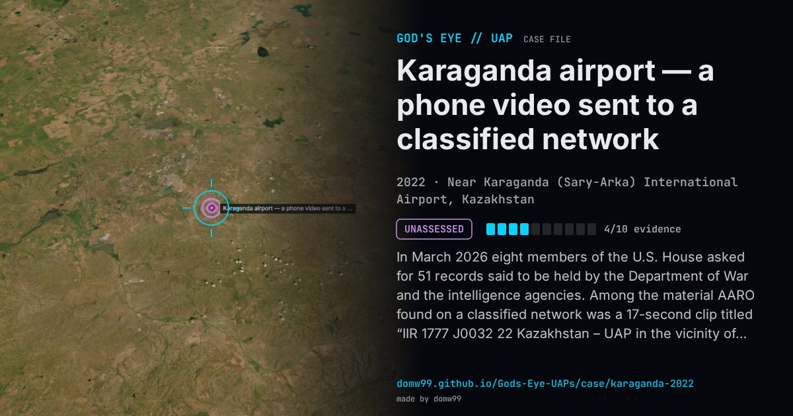

Karaganda airport — a phone video sent to a classified network

In March 2026 eight members of the U.S. House asked for 51 records said to be held by the Department of War and the intelligence agencies. Among the material AARO found on a classified network was a 17-second clip titled “IIR 1777 J0032 22 Kazakhstan – UAP in the vicinity of Karaganda International Airport”, uploaded in April 2023. AARO assesses that it was filmed with a phone’s rear camera in March 2022 and notes that it was digitally altered before upload. It shows a bright light with trails, the camera panning and zooming, and fades to black. It was released on DVIDS in May 2026 as DOW-UAP-PR072.
Explanation
Released in May 2026 without any finding. AARO says the clip came from an ordinary mobile phone in March 2022, that it was digitally altered before it was uploaded, and that, like much of that batch, it lacks a substantiated chain of custody. A luminous point with fading trails that the camera pans and zooms on is what bright stars, planets and aircraft lights often look like on phone video.
What was seen
Shape: A luminous point with trails of diminishing brightness extending from the centre
Witnesses: An unknown person with a phone; the clip came with a U.S. intelligence report title
Duration: About eight seconds of footage
Sources
Browse
- 2020s
- Unassessed
- Photo and video cases
- Official government documents
- Video footage
- Lights and fireballs